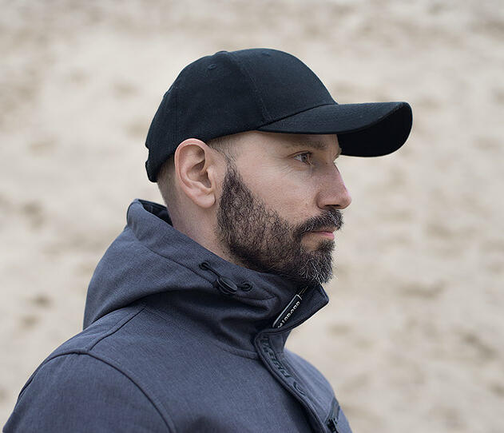

Дмитрий Архипов
Fullstack–разработчик (Ruby on Rails)

- Возраст: 41 год
- Место проживания: г. Балашиха, Московская область
- Электронная почта: work@dack9.ru
- GitHub: dmentry
Цель поиска работы
Работа Ruby on Rails–разработчиком, развитие в направлении fullstack-разработки
Профессиональные навыки
- Ruby, Ruby on Rails – написание, доработка приложений
- Знание базовых принципов ООП
- Написание простых тестов при помощи rspec/capybara/factory_bot
- Работа с гемами: devise, pundit, carrierwave, fog–aws, omniauth, mailjet, capistrano
- Уверенное использование Git, Github, Heroku
- Базовые знания языка запросов SQL
- Уверенное использование HTML и CSS
- Уверенное использование Bootstrap 4.5
- Работа с Linux: установка/настройка приложений (rvm/rbenv, nginx, postfix, pgsql, sql), работа в терминале
- Английский язык: upper intermediate
Дополнительное образование
- Курс: «Онлайн–интенсив по Ruby on Rails»
2020 – 2021
- Видеокурс по языку Ruby и платформе Rails
2020 – по нынешнее время
Опыт работы
ООО «Мазда Мотор Рус»
- Координатор по качеству продукции
05.2015 – по нынешнее время
03.2008 – 05.2015
ООО СП «Бизнес Кар»
11.2006 – 03.2008
06.2002 – 11.2006
Высшее образование
- Московский Государственный Технический Университет (МАМИ), факультет энергомашиностроения и приборостроения (ЭМиП), специальность «Электрооборудование автомобилей»
1997 – 2002
Обо мне
Являюсь достаточно открытый человеком, который всегда готов пообщаться и выслушать рекомендации более опытных коллег. Целеустремлен, обязателен, пунктуален. Хобби – макрофотография. Решил кардинально сменить сферу деятельности из-за профессионального выгорания